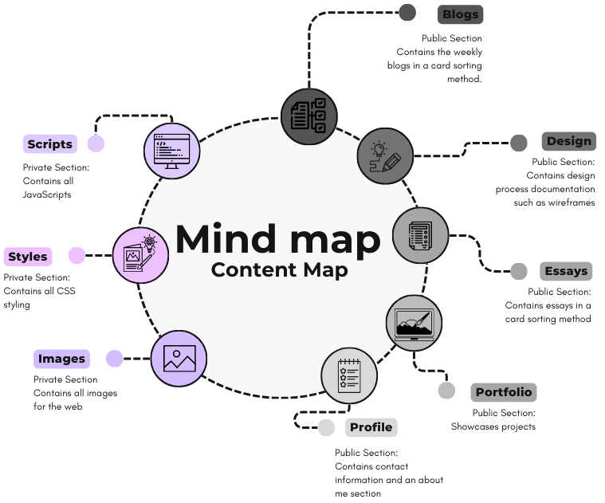

Working through the slides for Interaction Design (Geyser, 2023) for the web, define and discuss your user alignment, and map out your site's content, experience, and interface elements.
The main goal of the website is to function as a portfolio that highlights my
creativity and accomplishments so far. In addition, the website should be a stepping
stone in helping me discover my unique style and branding (Fungies, 2023).
The main goal for users is to interact with my work.
The User: There are two types of users.
The lived-project user, such as my lecturers and tutors that mark my projects,
and the imaginary user that comes to visit the portfolio.
Visitors such as collaborators and any professionals.
The users should be able to see displayed work on the portfolio and be able to contact me. (Moritz Prätorius, 2024)
Content to be shown on the web inlcudes, but is not limited to:
Showcasing projects (project summaries, my role, tools/engine used, team size)
Blogs
Design process documentation (Showcasing development for certain project, including prototyping,
wireframes, visual sketches if any)
Essays
Resume and profile (A downloadable resume and an about me section)
Contact information (contact info and links to professional profiles such as GitHub)
(Alvaro Trigo\'s Blog, 2022)
Brainstorming this initial version will probably end up looking like a mesh of strings: 
The content of the information will be structured in a user-friendly chronological order that aligns with how visitors will explore information, starting with the landing page/home page. The landing page's objective is to instantly capture attention and communicate who I am. Then on the same landing page, a call-to-action, such as "Explore Portfolio" or "Blogs," and navigation links to all the sections in the website. The Blog section contains my weekly blogs for this module. This will then have links to read more on each blog and navigation links to all the sections on the website. The Design section will be next to the blog section. This contains design process documentation that shows the design process of some project, in this case, it will contain my wireframes for now. In addition, the navigation links to all the sections in the website. The next section on the navigation bar will be the essays link. This is a page containing all the essays for this module and links to sections in the website (on the navigation bar). Following these will be the portfolio section, which will contain projects, etc. Lastly, on the navigation bar will be "About Me" section, also known as my profile and contact information.
Chronological User Flow: Users land on the homepage and get an overview of who I am and what I do. They navigate to the portfolio/projects section to explore my projects in detail. Interested users delve deeper into projects, blogs or essay They learn more about me in the "About Me" section for personal context, and have the contact section to reach out if they’re interested in collaboration or hiring.

In order to structure my user interface, I would like to focus on creating an intuitive, visually appealing, and functional design. The input controls would allow users to interact with my portfolio. This includes buttons to switch between pages and click on blog posts, text fields, etc. The navigational components will help users move through the site, hopefully easily. This includes elements such as the navigation bar, links to sections on the website, and a footer navigation, such as quick links to GitHub and contact info. The informational components display content and context. Project cards will be used for blogs and essays (thumbnail image preview, title and short description, read more button linking to the page of the blog). The about section will have an avatar and a text about my background/skills. Something I'd particularly work on is the Design Page section. I'd like to try and ensure all informational components adapt seamlessly to different screen sizes and devices.
After doing some research, I discovered that a well-organized structure enhances both user experience and search engine optimization (Romano, 2022). The exercise sort of emphasizes the importance of planning website structure early in the design process. So by mapping out my content hierarchically, I sort of ensure that users navigate seamlessly (at least that's the aim). Now the semantic markup defines how my content is presented and interpreted by browsers and assistive tech. (Progress, 2022) The next step would be to start thinking about design choices, which would include "colour scheme, typography, spacing, icons, imagery.". (Elementor, 2020)
I have mapped out the style guide for my website, which is of course subject to change. have created the basic web structure, such as creating pages for each section and posting my blogs for the week. I have added some images into my design page as well, this being the low-fidelity wireframe. For the next step, I'd like to start incorporating design choices that would appeal to my target audience, or "buyer personas" (Team, 2024).
Alvaro Trigo\'s Blog. (2022). How to Make Your Game Design Portfolio [+ 13 Examples] - Alvaro Trigo’s Blog. [online] Available at: https://alvarotrigo.com/blog/game-design-portfolios/Links to an external site. [Accessed 2 Mar. 2025].
Elementor. (2020). How To Create A Web Design Style Guide? Template & Examples. [online] Available at: https://elementor.com/blog/web-design-style-guide/Links to an external site. [Accessed 3 Mar. 2025].
Fungies (2023). Short Guide to Building Game Designer Portfolio - Fungies.io. [online] Fungies.io - Sell digital products seamlessly. Available at: https://fungies.io/short-guide-to-building-game-designer-portfolio/Links to an external site. [Accessed 2 Mar. 2025].
Geyser, H. (2023) ‘Designing Interaction’, [Lecture], WSOA3028A: Interactive Media 3A, University of the Witwatersrand, [Accessed 2 Mar. 2025].
Moritz Prätorius (2024). Game Designer Portfolio Website Examples (Best Of). [online] Slider Revolution. Available at: https://www.sliderrevolution.com/design/game-designer-portfolio-website/Links to an external site. [Accessed 2 Mar. 2025].
Progress, in (2022). How to create your portfolio website. [online] Creative Lives In Progress. Available at: https://creativelivesinprogress.com/articles/a-guide-to-creating-your-portfolio-website?section=How+to+make+your+website+a+realityLinks to an external site. [Accessed 3 Mar. 2025].
Romano, J. (2022). What Is a Website Structure and How Does It Impact UX? [online] Wix Blog. Available at: https://www.wix.com/blog/website-structuresLinks to an external site. [Accessed 3 Mar. 2025].
Team, T.U. (2024). Brand Style Guides: What They Are, With Top Brand Examples. [online] Upwork.com. Available at: https://www.upwork.com/resources/brand-style-guides#brand-style-guideLinks to an external site. [Accessed 3 Mar. 2025].